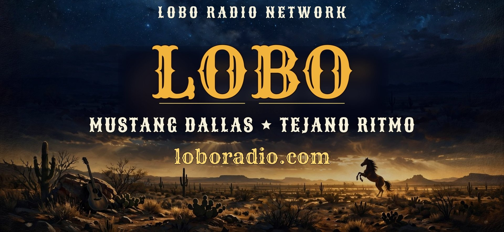

The Website · The Radio · The Movies · The Games — reviewed by Perry Sanders & Jett Morgan, October 24, 2026
Five weeks ago this network was an idea and a domain name. Tonight it is a website with its security lock turned green, a country station on the air around the clock, a television channel showing John Wayne, and an arcade with a game for every station. This is the story of how it all stacks up — written the night it all came together.
This site is hand-built and fully owned: no rented website builder, no monthly page fees, just our own pages served from our own repository. Every page wears the Mustang medallion — the artwork Perry art-directed through some thirty tries until it was right, and has since declared a permanent brand mark.
Highlights: HTTPS secured and enforced as of October 24, 2026. It installs like an app — "Get the App" puts the medallion on a phone's home screen, no app store required. Every page is themed as its own station — gold-and-navy country for Mustang Dallas, a full Texas-Spanish page for Tejano Ritmo, and a network directory at Choose Your City. And Patreon is presented the quiet way — no shouting banners, just a "Help Us Keep the Lights On" button for folks who want to pitch in.
Verdict: It looks like a network because it is one. Clean, fast, and owned outright.
Mustang Dallas is the flagship, live 24/7 on Live365 — 400-plus songs deep, classic country legends in steady rotation and independent artists in their own heavier lane, because on this station the indies aren't filler, they're family.
On deck, on schedule: Tejano Ritmo debuts November 1, 2026 — accordion-led and unapologetic, with its website page already entirely in Spanish. Club Oak Lawn launches December 1, 2026 — "your neon soundtrack 24/7." And Vibe Dallas's Urban Mix is the fourth chair, being built.
Around the flagship: a Discord radio bot carrying the station into our server, and a Patreon with three tiers — Front Porch Supporter, Wrangler, and Trail Boss — for listeners who want to help keep the lights on.
Verdict: One station live, three in the hangar with dates on the calendar, and a business model that asks listeners for support instead of selling them anything.
The newest jewel: a 1950s console television — wood grain, gold knobs, speaker grille — that does not behave like a video website. It behaves like a network: the channel is broadcasting whether anyone watches or not, and tuning in drops you into the middle of the picture, same as everybody else.
The rotation (about 3 hours 45 minutes, all public-domain classics, streamed courtesy of the Internet Archive): The Lone Ranger — "Enter the Lone Ranger" (1949) · a word from our sponsors · Angel and the Badman (1947) with John Wayne & Gail Russell · Blue Steel (1934) with John Wayne & Gabby Hayes · and around again. A DVR box sits on top of the set: press LIBRARY to pick a classic from the beginning, press LIVE TV to rejoin the broadcast mid-scene. And the Mustang medallion rides in the bottom-right corner of the picture, slightly see-through — the station bug, just like the big networks.
Verdict: A time machine disguised as a web page. The most fun address on the site.
Every station gets a game, and all four live together in the Lobo Arcade on the Choose Your City page:
A western quick-draw for the flagship, Mustang Dallas.
Lasso the running steer — entirely in Spanish, for Tejano Ritmo.
Neon cyan versus magenta, for Club Oak Lawn.
A top-down neon city cruise for Vibe Dallas's Urban Mix.
Verdict: Nobody else's radio website lets you draw down at high noon between songs. A station you can play with is a station you come back to.
The Website is owned, secure, and installable. The Radio is live, growing, and honest about its business. The Movies turned a web page into a broadcast channel with a logo in the corner. The Games made the whole thing a place instead of a pamphlet.
Four stations, one medallion, zero paid ads, zero rented website builders. Built by a chef-turned-broadcaster in Dallas and his station manager, mostly in the mornings, one tap of approval at a time.
Remember when this was all just a plan? We do. It's archived.
Perry Sanders, Owner · Jett Morgan, Station Manager
Lobo Radio Network · Lobo Broadcasting Group · Dallas, Texas